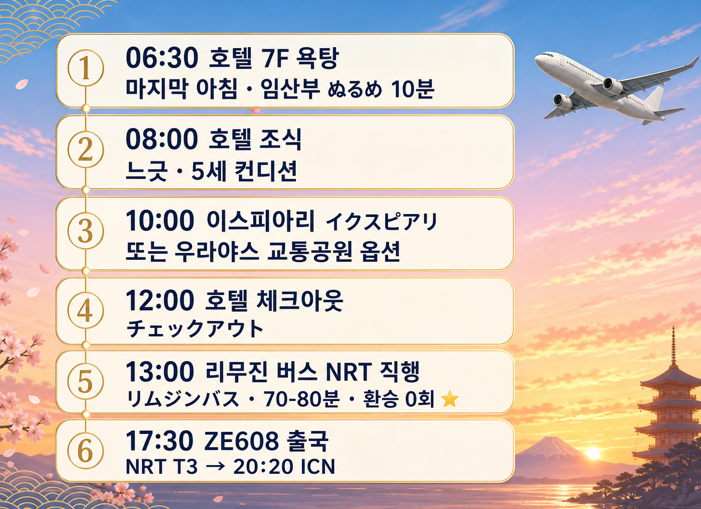
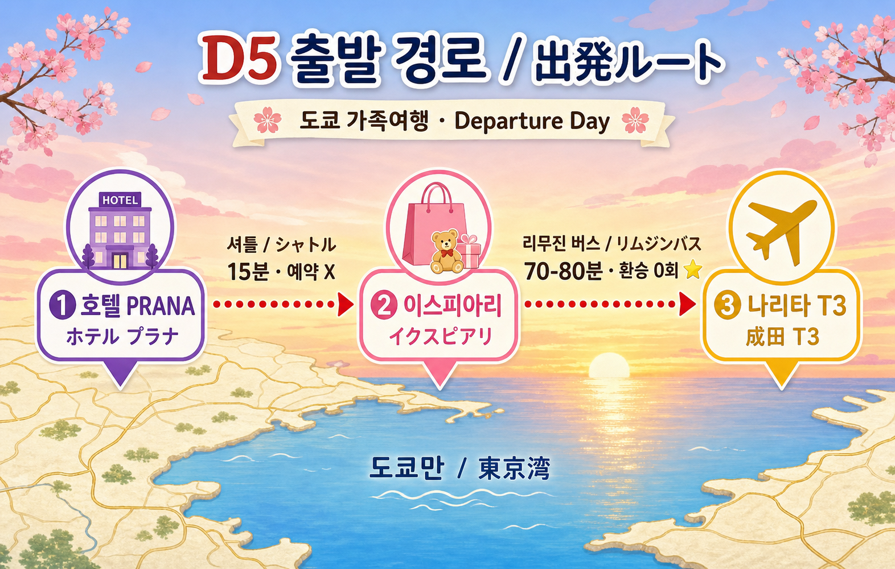
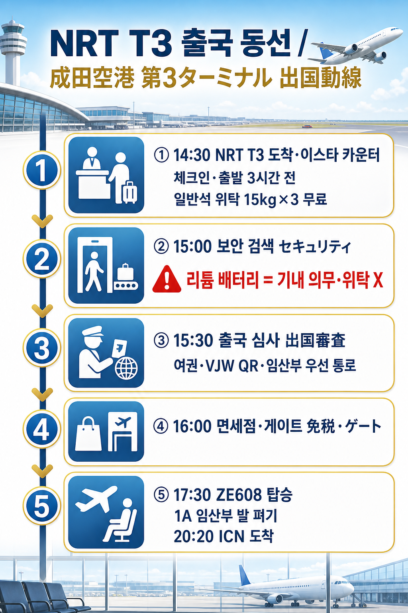

D5 — 5월 23일 (토) 출국일 (ZE608 NRT T3 17:30 → ICN T1 20:20)
D5 — 5월 23일 (토) 출국일 (ZE608 NRT T3 17:30 → ICN T1 20:20)
호텔 욕탕 (마지막) → イクスピアリ (이쿠스피아리·Ikspiari) 또는 浦安市交通公園 (우라야스시 코우츠우 코우엔·Urayasu Traffic Park) Plan A/B → 호텔 체크아웃 → リムジンバス (리무진 바스·Limousine Bus) 디즈니리조트 노선 NRT T3 직행 → ZE608 → ICN T1 20:20 도착
가족 3명 (수억·아람·준혁) / 임산부 16주 + 5세 / 4박 5일 마지막
① 그날 요약
D5 = 출국일 페이스 = 환승 0회 리무진 직행 우선 · 메인 = ① 06:30 호텔 7F 大浴場 (다이요쿠죠) 마지막 입욕 ② 10:00-12:00 イクスピアリ (이쿠스피아리·Ikspiari) Plan A 디폴트 또는 浦安市交通公園 (우라야스 교통공원) Plan B 옵션 ③ 13:00 호텔 → リムジンバス (리무진 바스) NRT T3 직행 (70-80분·표준 ¥2,300/¥1,150 추정·확인 못 함·D-1 호텔 프런트 의무) ④ ZE608 17:30 NRT T3 → 20:20 ICN T1 도착. 4박 5일 누적 피로·임산부 부종·5세 짐 정리 압박 = 환승 0·평지·휠체어 옵션 핵심.

6 슬롯 흐름 = 욕탕 → 조식 → 이쿠스피아리 (옵션 우라야스) → 체크아웃 → 리무진 → ZE608
② 동선
호텔 → イクスピアリ (이쿠스피아리·Ikspiari) (Plan A·디폴트·마이하마역 도보 5-6분) 또는 浦安市交通公園 (우라야스 교통공원) (Plan B·호텔 도보 8-10분) → 호텔 체크아웃 → 호텔 부지 내 リムジン 정류장 → NRT T3 (成田国際空港 第3ターミナル·나리타 코쿠사이 쿠우코우 다이산 타-미나루·Narita International Airport Terminal 3) 직행 (70-80분). 임산부 환승 0회·5세 베비카 자가 OK.

🌐 인터랙티브 동선 지도: D5_folium.html — 4 핀 (호텔·우라야스 교통공원·이쿠스피아리·NRT T3) + 리무진 폴리라인.
🗺️ 핵심 지점 구글맵: - 三井ガーデンホテルプラナ東京ベイ (호텔 PRANA·Mitsui Garden Hotel Prana Tokyo Bay) - 浦安市交通公園 (우라야스 교통공원·Urayasu Traffic Park) - イクスピアリ (이쿠스피아리·Ikspiari) - 舞浜駅 (마이하마역·Maihama Station) - 成田国際空港 第3ターミナル (NRT T3·Narita Airport Terminal 3) - 동선 = 호텔 → 이쿠스피아리 (transit) - 동선 = 호텔 → NRT T3 (transit·리무진 직행)
③ 시간순 일정 (메인)
06:30-08:00 · 호텔 7F 大浴場 (다이요쿠죠·큰 욕탕) 마지막 입욕
- 06:30-07:30 호텔 7F 大浴場
- 임산부 ぬるめ (누루메·미온) 41°C 이하·10분 한정
- 부+준혁 男湯 (오토코유·남탕)
- 타올 = 객실 휴대 의무 (욕탕 자체 비치 X)
- 07:30-08:00 객실 복귀·아침 준비·캐리어 정리 (D-1 호텔 프런트 짐 보관 사전 확인)
호텔 7F 욕탕 운영시간 (✅ 호텔 답변 검증): 5:00-9:00 / 18:00-25:00
일본어 1줄 (욕탕)
| 한국어 | 일본어 | 발음 |
|---|---|---|
| 욕탕 마지막 이용입니다 | 大浴場 最後 の 利用 です | 다이요쿠죠 사이고노 리요-데스 |
| 타올 잊지 마세요 (가족 룰) | タオル 忘れず | 타오루 와스레즈 |
08:00-09:00 · 호텔 1F 조식 (느긋·마지막)
- 양식·일식 풀 (4회차 조식 마지막)
- 5세 배 채우기 (비행기 전 안정 식사)
- 임산부 식이 = 회 X·생달걀 X·완전 익힘 메뉴
일본어 1줄
| 한국어 | 일본어 | 발음 |
|---|---|---|
| 마지막 조식입니다·감사합니다 | 最後 の 朝食 です·ありがとうございます | 사이고노 쵸-쇼쿠데스·아리가토- 고자이마스 |
09:00-10:00 · Plan A vs Plan B 분기 결정
Plan A. 호텔 회복 + 이쿠스피아리 (디폴트·임산부 페이스 우선)
- 객실에서 짐 정리 (느긋)
- 5세 디즈니 리조트 마지막 영상 (호텔 TV·디즈니 채널)
- 임산부 다리 펴고 휴식
Plan B. 浦安市交通公園 (우라야스 교통공원·Urayasu Traffic Park) 옵션·5세 만족도 ↑
무엇?: 우라야스시 시영 무료 교통 공원. 무료 자전거 (보조바퀴·삼륜·일륜·세발자전거·배터리카) + 동물 코너 (토끼·기니피그·염소·카피바라·왈라비) + 평일 14:30 무료 포니 승마 (3세-초4).
| 항목 | 정보 |
|---|---|
| 위치 | 호텔 도보 8-10분 |
| 운영 | 9:00-16:30·무료·휴무 월요일 |
| 5/23 (토) | ✅ 정상 운영 (시 공식) |
| 포니 | 평일 14:30만 (5/23 토 = ❌ 미해당) |
| 5세 잭팟 | ⭐⭐⭐⭐⭐ 자전거·동물·놀이터 |
| 임산부 | ✅ 평지·벤치 풀 |
Plan B 선택 시 = 9:00-11:30 우라야스 교통공원 → 11:30 호텔 복귀.
5/23 (토) 포니 = X = Plan B 5세 만족도 약간 감소·하지만 자전거·동물 코너로 충분.
🔗 미리보기 (우라야스 교통공원): - 우라야스시 공식 (KODOMONAVI) - 네이버 블로그 우라야스 교통공원 5세 후기 - 유튜브 浦安市交通公園 영상
10:00-12:00 · ⭐ イクスピアリ (이쿠스피아리·Ikspiari) Plan A 디폴트 슬롯
무엇?: 東京ディズニーリゾート (도쿄 디즈니 리조트·Tokyo Disney Resort) 인접 복합 상업 시설 (마이하마역 도보 5-6분). 영화관·디즈니 굿즈·키즈 카페·140+ 매장.
| 항목 | 정보 |
|---|---|
| 주소 | 千葉県 浦安市 舞浜 1-4 (치바켄 우라야스시 마이하마 1-4) |
| 영업 | 10:00-22:30 매일 (공식·매장별 영업 시작 D-Day 변동) |
| 5세 친화 | 디즈니 굿즈 (디즈니 스토어·디즈니 패션)·키즈 카페·평지 |
| 임산부 | 벤치 풀·평지·휠체어 친화·다목적 화장실 |
| 추천 | 마지막 디즈니 굿즈 (5세 토미카 추가·기념품) + 임산부 가벼운 쇼핑 + 점심 |
핵심 매장 (5세·임산부 친화): - ディズニーストア (디즈니 스토어·Disney Store) = 디즈니 굿즈 풀 - キッディランド (킷디랜드·Kiddy Land) = 5세 잭팟·캐릭터 굿즈 - 트미카·플라레일 매장 (확인 못 함·D-Day 매장 확인) - 점심 매장 풀 = 일식·양식·키즈 메뉴 풀
일본어 1줄
| 한국어 | 일본어 | 발음 |
|---|---|---|
| 디즈니 굿즈 어디예요? | ディズニーグッズ どこ ですか? | 디즈니- 굿즈 도코데스카? |
| 토미카 매장 있나요? | トミカショップ ありますか? | 토미카 숏푸 아리마스카? |
| 키즈 메뉴 있는 식당 어디? | キッズメニュー の レストラン どこ ですか? | 킷즈 메뉴-노 레스토란 도코데스카? |
| 다목적 화장실 어디? | 多目的 トイレ どこ ですか? | 타모쿠테키 토이레 도코데스카? |
🔗 미리보기 (이쿠스피아리): - 이쿠스피아리 공식 (한국어) - 구글맵 (이쿠스피아리·평점 4.3+) - Disney 公式 이쿠스피아리 소개 - 네이버 블로그 이쿠스피아리 디즈니 굿즈 후기 - 유튜브 イクスピアリ 영상
12:00-13:00 · 호텔 체크아웃·짐 정리
- 12:00 호텔 체크아웃 (チェックアウト·체크아우토·Check-out)
- 체크아웃 정책 = 12:00 표준·레이트 체크아웃·짐 보관 = 확인 못 함·D-1 5/22 호텔 프런트 의무
- 짐 보관 가능 시 = 이쿠스피아리 후 11:30 체크아웃 + 짐 호텔 보관 → 13:00 직전 픽업
호텔 프런트 (フロント·후론토·Front Desk) 일본어 1줄
| 한국어 | 일본어 | 발음 |
|---|---|---|
| 체크아웃 부탁드립니다 | チェックアウト お願いします | 체크아우토 오네가이시마스 |
| 짐 보관 가능합니까? | 荷物 預け できますか? | 니모츠 아즈케 데키마스카? |
| 13시 픽업 부탁드립니다 | 13時 ピックアップ お願いします | 쥬-산지 핏쿠앗푸 오네가이시마스 |
| 레이트 체크아웃 가능? | レイト チェックアウト できますか? | 레이토 체크아우토 데키마스카? |
| 리무진 정류장 어디? | リムジンバス 乗り場 どこ ですか? | 리무진바스 노리바 도코데스카? |
호텔 주소·전화 (택시 긴급용): - 〒279-0014 千葉県 浦安市 明海 6-2-1 - 三井ガーデンホテルプラナ東京ベイ (Mitsui Garden Hotel Prana Tokyo Bay) - TEL 047-382-3331
13:00-14:30 · ⭐ リムジンバス (리무진 바스·Limousine Bus) 디즈니리조트 노선 NRT T3 직행
무엇?: 호텔 부지 내 정류장 출발 → 成田国際空港 第3ターミナル (NRT T3) 직행. 운영 = 京成バス (케이세이 바스·Keisei Bus) 또는 東京空港交通 (도쿄 쿠우코우 코우츠우·Airport Limousine) (확인 못 함·D-1 호텔 프런트).
| 항목 | 정보 |
|---|---|
| 소요 | 약 70-80분 |
| 요금 | 어른 ¥2,300·어린이 ¥1,150 (표준 추정·확인 못 함·D-1 호텔 프런트) |
| 예약 | 확인 못 함·D-1 호텔 프런트 (대부분 사전 예약 권장 또는 정류장 매표) |
| 임산부 환승 | 0회 ⭐⭐⭐⭐⭐ |
| 5세 | 잠 또는 창가 풍경 |
| 베비카 | 접어 트렁크 적재 |
일본어 1줄 (리무진)
| 한국어 | 일본어 | 발음 |
|---|---|---|
| 나리타 T3 리무진 어디서? | 成田 T3 リムジンバス どこ ですか? | 나리타 T3 리무진 바스 도코데스카? |
| 어른 2·어린이 1 부탁드립니다 | 大人 2·子供 1 お願いします | 오토나 니마이·코도모 이치마이 오네가이시마스 |
| 짐 적재 부탁드립니다 | 荷物 積み お願いします | 니모츠 츠미 오네가이시마스 |
| 화장실 차내 있나요? | お手洗い 車内 ありますか? | 오테아라이 샤나이 아리마스카? |
[리무진 디즈니리조트 노선] D-1 호텔 프런트 확인 의무 · 동선 = 호텔 → NRT T3 (transit)
🔗 미리보기 (리무진): - 도쿄 디즈니 리조트 → 나리타 리무진 공식 - 네이버 블로그 디즈니 리조트 리무진 나리타 후기 - 유튜브 リムジンバス 디즈니 → 나리타
14:30-17:00 · NRT T3 도착·출국 동선
NRT T3 출국 동선

5 스테이션 = 도착 → 이스타항공 카운터 체크인 → 보안 검색 → 출국 심사 → 면세점·게이트 ZE608
- 14:30 NRT T3 도착·짐 내림
- 14:30-15:00 이스타항공 (이스타-こうくう·Eastar Jet·ZE608) 카운터 체크인 (출발 3시간 전 권장·일반석 위탁 15kg×3 무료 ✅ PNR S2VHUL)
- 15:00-15:30 보안 검색
- 🚨 리튬 배터리 (リチウム バッテリー·Lithium Battery) = 기내 휴대 의무 / 위탁 X ⚠️ 영구 룰
- 노트북·보조 배터리 2개·카메라 배터리·AirTag (에어태그) = 모두 기내
- 15:30-16:00 출국 심사 (임산부 우선 통로·マタニティマーク (마타니티 마크·Maternity Mark) 배지 활용)
- 16:00-17:00 면세점·게이트 (5세 마지막 간식·임산부 다리 펴기·1A 비행 압박 양말 재착용)
일본어 1줄 (NRT T3)
| 한국어 | 일본어 | 발음 |
|---|---|---|
| 이스타항공 카운터 어디예요? | イースター航空 カウンター どこ ですか? | 이-스타- 코우쿠우 카운타- 도코데스카? |
| 임산부입니다·우선 통로 부탁드립니다 | 妊婦 です·優先 通路 お願いします | 닌푸데스·유센 츠-로- 오네가이시마스 |
| 보조 배터리 기내 휴대입니다 | モバイル バッテリー 機内 持ち込み です | 모바이루 밧테리- 키나이 모치코미데스 |
| 면세 한도 어떻게? | 免税 限度 どう ですか? | 멘제이 겐도 도-데스카? |
| 가족 3명 게이트 부탁드립니다 | 家族 3人 ゲート お願いします | 카조쿠 산닌 게-토 오네가이시마스 |
17:30-20:20 · ZE608 출국 (NRT T3 → ICN T1)
- 17:30 NRT T3 출발 (이스타항공 ZE608·전자항공권 PDF 검증 완료 PNR S2VHUL)
- 좌석 = 1A (5세 창가·구름·바다 풍경)·1B (수억)·1C (아람)
- 1열 = 발 펴기 좋음·임산부 친화
- 임산부 안전벨트 = 배 아래로
- 20:20 ICN T1 (인천공항 제1터미널·Incheon Airport Terminal 1) 도착·귀가
5세 1A 창가 = 비행 ⭐⭐⭐⭐⭐ 잠 또는 풍경.
일본어 1줄 (기내·승무원)
| 한국어 | 일본어 | 발음 |
|---|---|---|
| 임산부입니다·물 한 잔 부탁드립니다 | 妊婦 です·お水 一杯 お願いします | 닌푸데스·오미즈 잇파이 오네가이시마스 |
| 5세 아이 담요 부탁드립니다 | 5歳児 ブランケット お願いします | 고사이지 부랑켓토 오네가이시마스 |
④ 별첨 자료
🚨 1. 사용자 컨펌·재확인 큐 (D-1 5/22 호텔 프런트 의무)
❶ D-1 사전 재확인 (5/22 호텔 프런트 의무)
| # | 항목 | 방법 |
|---|---|---|
| 1 | 리무진 디즈니리조트 노선 5/23 정확 시각표·요금·예약 정책 | 📞 호텔 프런트 (047-382-3331) |
| 2 | 호텔 체크아웃 12:00 정책·레이트 체크아웃·짐 보관 시간 | 📞 호텔 프런트 |
| 3 | 이쿠스피아리 5/23 (토) 매장별 영업 시작 시각 | 공식 |
| 4 | 이스타 2026 리튬 배터리·면세 한도 정책 | 출국 전 사용자 자가 확인 |
| 5 | NRT T3 이스타 카운터 위치·체크인 시각 | NRT T3 공식 |
| 6 | Plan A vs Plan B 결정 (이쿠스피아리 vs 우라야스 교통공원) | D-Day 가족 컨디션 |
| 7 | 마타니티 마크 (출국 시) 휴대 확인 | 가족 자체 |
❷ D-Day 현장 확인 (5/23)
| # | 항목 | 방법 |
|---|---|---|
| 1 | 우라야스 교통공원 5/23 (토) 자전거 운영 (Plan B) | 안내소 |
| 2 | 이쿠스피아리 디즈니 스토어·키즈 매장 영업 | 매장 |
| 3 | 호텔 짐 보관 정확 마감 시간 | 프런트 |
| 4 | 리무진 정류장 출발 정확 시각 | 정류장 안내판 |
❸ 영구 룰 (5/23 자기 점검 의무)
| # | 항목 | 룰 |
|---|---|---|
| 1 | 리튬 배터리 | ⚠️ 위탁 X·기내 휴대 의무 (5/19 D1 출국과 동일) |
| 2 | 노트북·보조 배터리·카메라 배터리 | 기내 |
| 3 | AirTag (베비카) | 기내 |
| 4 | 마타니티 마크 | 출국 심사 우선 통로 |
🔍 2. 1차 출처 검증
| 사실 | 검증 |
|---|---|
| ZE608 17:30 NRT T3 → 20:20 ICN T1 | ✅ 전자항공권 PDF (PNR S2VHUL·트립닷컴 1400825277788010) |
| 이스타 일반석 위탁 15kg×3 무료·합산 OK 45kg | ✅ 전자항공권 PDF “(일반석)” 확정 |
| 휴대 수하물 1인 1개 115cm·총중량 10kg 한도 | ✅ 전자항공권 PDF |
| 보안·체크인 출발 3시간 전 권장 | ✅ 트립닷컴 PDF “최소 3h” |
| 이쿠스피아리 10:00-22:30 | ✅ 공식 |
| 우라야스 교통공원 9:00-16:30·무료·휴무 월 | ✅ KODOMONAVI·시 공식 |
| 우라야스 포니 = 평일 14:30 (5/23 토 = ❌ 미해당) | ✅ 시 공식 |
| 호텔 7F 욕탕 5:00-9:00 / 18:00-25:00 | ✅ 호텔 답변 |
| 리튬 배터리 위탁 X·기내 OK | ✅ 영구 룰 (국토교통부·이스타항공) |
| 리무진 디즈니리조트 노선 5/23 정확 시각표·요금 | ❌ 공식 fetch 실패·D-1 호텔 프런트 의무 |
| 호텔 체크아웃 정책 (레이트·짐 보관) | ❌ 호텔 공식 답변 X·D-1 호텔 프런트 의무 |
| 한국 입국 면세 한도 (술·담배·기타) | 사용자 자가 확인 (관세청 공식) |
🤰 3. 임산부 (아람) 안전 점검 (4박 5일 누적 + 출국일)
| 카테고리 | 결과 |
|---|---|
| 누적 피로·부종 (4박 5일 마지막) | ⚠️ 압박 양말 재착용 (1A 비행 의무)·물 600ml·1A 발 펴기 |
| 낙상 | ✅ 환승 0회 리무진·평지·이쿠스피아리 휠체어 친화 |
| 충격·진동 | ✅ 리무진·항공 정시·N’EX X (리무진 직행) |
| 고열 | ✅ 욕탕 ぬるめ 10분 (마지막) |
| 균형 | ✅ |
| 식이 | ✅ 호텔 조식 마지막·면세점 안전 메뉴·기내 가벼움 |
| 격렬도 | ✅ 가벼운 일정·Plan A 호텔 회복 우선 |
| 출국 심사 우선 통로 | ✅ 마타니티 마크 배지 활용 |
👶 4. 5세 (준혁) 페이스·잭팟
| 슬롯 | 평가 |
|---|---|
| 욕탕 마지막 | ⭐⭐⭐ |
| 우라야스 동물·자전거 (Plan B·토요일 포니 X) | ⭐⭐⭐⭐ |
| 이쿠스피아리 디즈니 굿즈·키즈 매장 | ⭐⭐⭐⭐⭐ |
| 리무진 창가 | ⭐⭐⭐⭐ 잠·풍경 |
| 1A 창가 비행 | ⭐⭐⭐⭐⭐ |
🚼 5. 베비카·휠체어 동선
| 구간 | 권장 |
|---|---|
| 호텔 내부 | 베비카 OK |
| 우라야스 교통공원 (Plan B) | 평지·베비카 OK |
| 이쿠스피아리 (Plan A) | 평지·베비카 OK·다목적 화장실·휠체어 친화 |
| 리무진 | 베비카 접어 트렁크 적재 |
| NRT T3 | 베비카 OK·게이트체크 (탑승 직전 게이트에서 접어 위탁) |
| ICN T1 | 게이트 수령·도착층 베비카 OK |
🚻 6. 화장실 매핑
| 슬롯 | 위치 |
|---|---|
| 호텔 객실·1F | – |
| 우라야스 교통공원 (Plan B) | 공원 내·다목적 |
| 이쿠스피아리 (Plan A) | 매장 풀·다목적 화장실 |
| 리무진 차내 | ❌ (출발 전 화장실 사이클 의무) |
| NRT T3 | 각 층 풀·다목적·수유실 |
| 기내 | 차량 후미 |
가족 룰 — “10분 전 룰”: 출발 5분 전 + 끝 10분 전 = 화장실 사이클.
🎯 7. 변수 대비
| 변수 | 대응 |
|---|---|
| 우천 | Plan B 우라야스 X·이쿠스피아리만 (실내 풀) |
| 5세 컨디션 ↓ | 호텔 회복·이쿠스피아리 단축·리무진 잠 |
| 임산부 부종 ↑ | 호텔 회복 Plan A 디폴트·압박 양말·휠체어 옵션 |
| 리무진 지연 | 13:00 출발 → 14:30 NRT = 3시간+α buffer (안전·체크인 3h 전 권장 충족) |
| 짐 보관 X | 11:30 체크아웃 + 짐 들고 이쿠스피아리 |
| 교통 정체 | NRT 도착 늦어도 = 보안·출국 압박 (예비 30분 X) |
| 이스타 카운터 줄 길음 | 셀프 체크인 키오스크 활용 |
| 리튬 배터리 위탁 실수 | NRT T3 보안 검색에서 즉시 발견·기내 변경 가능 |
📦 8. 핸드캐리 (D5 사용분·출국 + 한국 입국)
기내 의무 휴대
- 여권 (旅券·료켄·Passport) × 3 + VJW QR (한국 입국 X·X·일본 출국 시 사용 X)
- 마타니티 마크 (マタニティマーク·Maternity Mark) 배지 (출국 심사 우선 통로)
- 임산부 압박 양말 (1A 비행 의무)
- 5세 갈아입을 옷 1세트
- 5세 비상 간식·태블릿·이어폰 (기내 엔터테인먼트)
- 🚨 리튬 배터리 의무 (기내):
- 보조 배터리 2개
- 노트북 + 어댑터
- 카메라 배터리
- AirTag (베비카)
- 일본 어댑터 (마지막 충전 후 보관)
- 물병 (보안 후 공항 매점 재구매)
- 호텔 자료·바우처 PDF·전자항공권 PDF (스마트폰)
- 일본어 호텔 주소 메모 (긴급 = 만약 환승 실패 시)
면세 한도 (한국 입국·관세청 공식 사용자 자가 확인)
- 술 1리터 ($400 이하)·담배 200개비·면세 한도 $600 (1인)
- 5세 = 면세 한도 적용 X (어린이 면세 정책 별도·관세청 확인)
🇯🇵 9. 일본어 핵심 문구 풀
| 한국어 | 일본어 | 발음 |
|---|---|---|
| 체크아웃 부탁드립니다 | チェックアウト お願いします | 체크아우토 오네가이시마스 |
| 짐 보관 가능합니까? | 荷物 預け できますか? | 니모츠 아즈케 데키마스카? |
| 13시 픽업 부탁드립니다 | 13時 ピックアップ お願いします | 쥬-산지 핏쿠앗푸 오네가이시마스 |
| 레이트 체크아웃 가능? | レイト チェックアウト できますか? | 레이토 체크아우토 데키마스카? |
| 나리타 T3 리무진 어디서? | 成田 T3 リムジンバス どこ ですか? | 나리타 T3 리무진 바스 도코데스카? |
| 어른 2·어린이 1 | 大人 2·子供 1 | 오토나 니마이·코도모 이치마이 |
| 짐 적재 부탁드립니다 | 荷物 積み お願いします | 니모츠 츠미 오네가이시마스 |
| 임산부 우선 통로 부탁드립니다 | 妊婦 優先 通路 お願いします | 닌푸 유센 츠-로- 오네가이시마스 |
| 보조 배터리 기내 휴대입니다 | モバイル バッテリー 機内 持ち込み です | 모바이루 밧테리- 키나이 모치코미데스 |
| 면세 한도 어떻게? | 免税 限度 どう ですか? | 멘제이 겐도 도-데스카? |
| 디즈니 굿즈 어디? | ディズニーグッズ どこ ですか? | 디즈니- 굿즈 도코데스카? |
| 어린이 의자 있나요? | 子供 椅子 ありますか? | 코도모 이스 아리마스카? |
🗺️ 10. 구글맵·공식 URL
공식 사이트
구글맵 핀
동선 transit
후기·블로그·유튜브 풀
전화번호 풀
- 호텔 PRANA: 047-382-3331
- 이스타항공 고객센터: 1544-0080 (한국)
- NRT 종합 안내: 0476-34-8000
💡 11. 가족 코멘트
“오늘의 메인 카드”: - 🛁 호텔 7F 大浴場 마지막 = 4박 5일 마무리 명상·일본 결 마지막 흡수 - 🎢 이쿠스피아리 (Plan A) 또는 우라야스 교통공원 (Plan B·토요일 포니 X) = 마지막 디즈니 굿즈·5세 추억 - ✈️ 리무진 직행 + ZE608 1A 창가 = 환승 0회·임산부 누적 피로 마감 우선·5세 1A 잭팟
“D5 컨셉”: > “마지막 욕탕 → 가족 컨디션 케어 → 리무진 직행 환승 0회 = 임산부 페이스 풀데이 마감 우선”
“4박 5일 통합 회상”: > “D1 토미카·긴자 디너 → D2 디즈니랜드 메인 → D3 해리포터·몽벨·오사카나 → D4 팀랩·카사이 일몰 → D5 마지막 욕탕·리무진 직행 = 5세 + 임산부 + 부 모두 잭팟의 균형”
⑤ 📚 자료·자세히 보기
약도·인터랙티브
{kind=link}
{kind=link}
{kind=link}
공식·1차 출처
- 호텔 PRANA 공식 — 셔틀·리무진·체크아웃 정책 (D-1 프런트 의무)
- 이쿠스피아리 공식 (한국어)
- 우라야스 교통공원 공식
- 도쿄 디즈니 리조트 → 나리타 리무진 공식
- NRT T3 공식 (한국어)
- 이스타항공 공식
- 전자항공권 PDF (PNR S2VHUL)
- 한국 관세청 면세 한도 공식
- 국토교통부 리튬 배터리 항공 운송 가이드
예약 바우처 (D5 관련)
{kind=link}
{kind=link}
한국어 후기 풀
유튜브 풀
전화번호 풀
- 호텔 PRANA: 047-382-3331
- 이스타항공 고객센터 (한국): 1544-0080
- NRT 종합 안내: 0476-34-8000
- ICN T1 종합 안내: 1577-2600
📅 작성: 2026-05-18 D-1 / 갱신: 2026-05-19 D-Day (v5 + 룰 31 풀세트·Naming·Map·Preview 3종 + 룰 28·29·30 적용·D1·D3 디자인 모방·항공권 PDF PNR S2VHUL 검증·리튬 배터리 영구 룰) / 가족 컨시어지